<div class="textcontainer typewriter-texture">
<p class="margin"> </p>
<h3>Week 8: CNC Milling</h3>
<h4>1. Design Something and CNC Mill It</h4>
<p>My girlfriend and I recently celebrated a milestone, so as part of a gift for it, I wanted to make her something. She has been teaching me Spanish, and at some point I misremembered the term "silly goose" as "silly duck" and translated it to "pato tonto." Since then it's been an inside joke and whenever one of us does something silly the other will say "pato tonto." Consequently, I conspired with my friend Chet to design a PNG of two ducks forming a heart, along with the text "Patos Tontos."</p>
<p>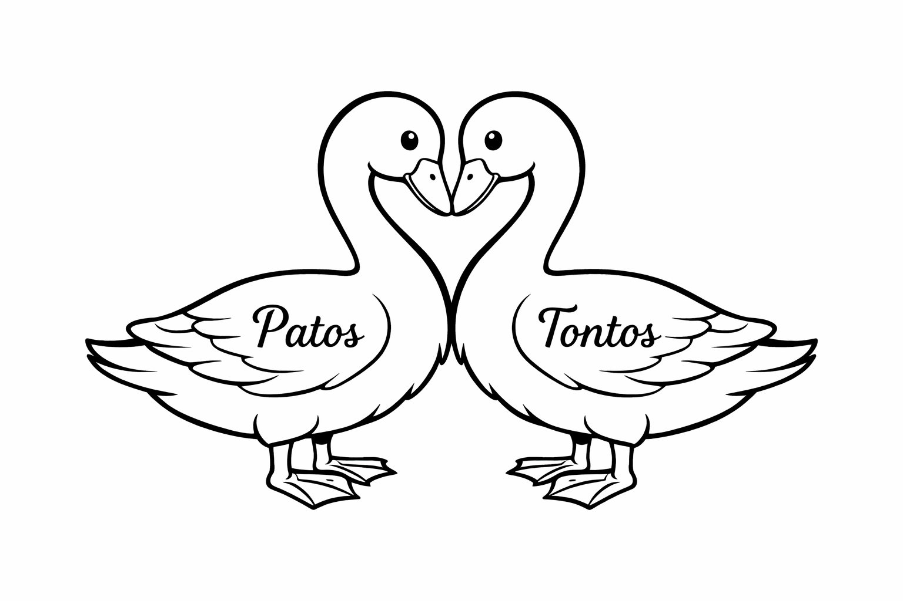</p>
<p>I then converted it using Adobe into an SVG and imported it into Aspire. However, after resizing to the max size I could fit in the vacuum sealer (approximately 10 by 7 inches), I realized the lines were not thick enough for the 1/16 inch bit on the Shopbot. I had Chet thicken the lines, but when I ran it through the SVG converter, it gave me a cursed looking SVG.</p>
<p>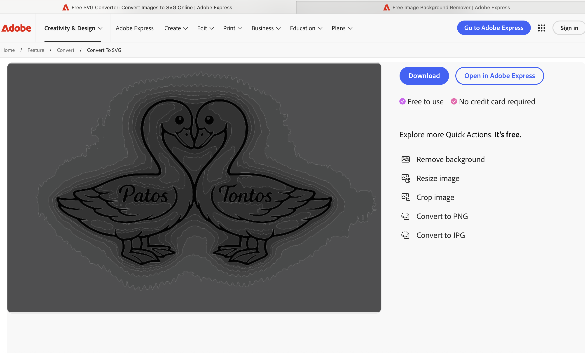</p>
<p>I believe this is because the image has anti-aliasing (grey edges) around the lines, which is what causes the blob look. I asked Chet to just use plain black lines, but I kept running into the same issue. Thus, I took the thick line PNG to my other friend Gemma (Google Gemini), which was able to create a version without aliasing that Adobe was able to convert into an SVG without any problems</p>
<p>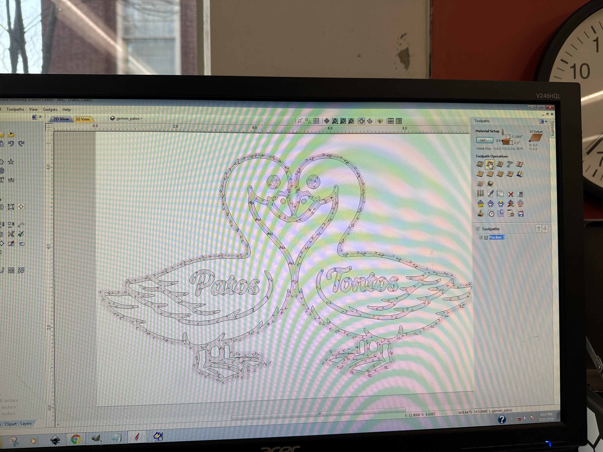</p>
<p>After creating the tool paths in Aspire, I used the Shopbot to mill out the design on MDF with .2 inch inset for the duck details and the text. However, after it finished, the .2 inch inset was clearly too deep, as it didn't provide enough structural support for the features and some, like the beak and feet, came off during the milling.</p>
<p>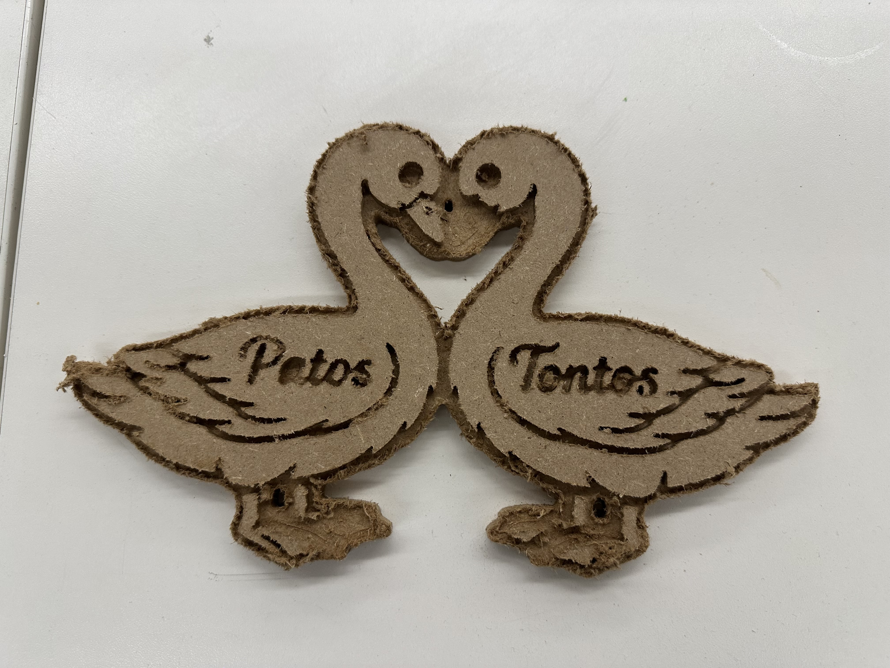</p>
<p>I tried again with 0.02 inch insets and it came out much nicer.</p>
<p>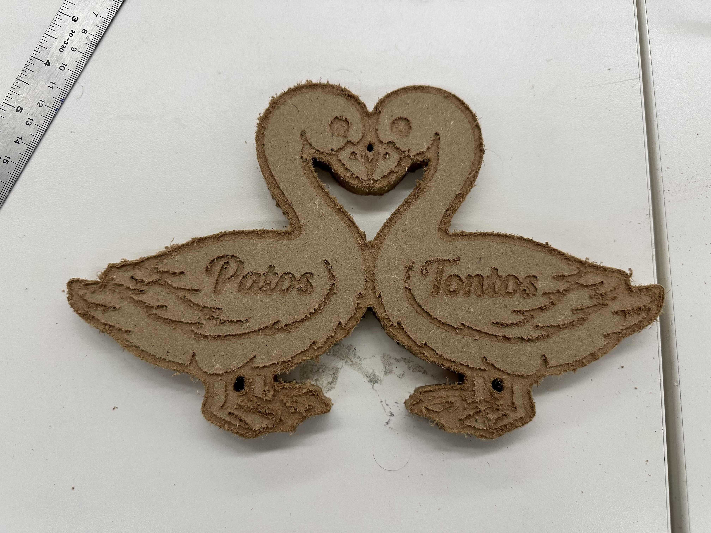</p>
<h4>2. Post-Process with Vacuum Forming</h4>
<p>I chose to vacuum form and then cast using hydro-stone gypsum cement. The plastic formed to the design pretty well. However, there were small holes near the neck that I would need to fill, and the MDF left residue in the plastic (Lesson learned: don't use MDF for intricate designs, as it is then difficult to sand off excess fluff without damaging the design).</p>
<p>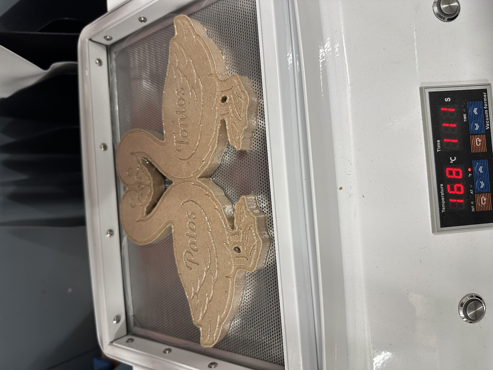</p>
<p>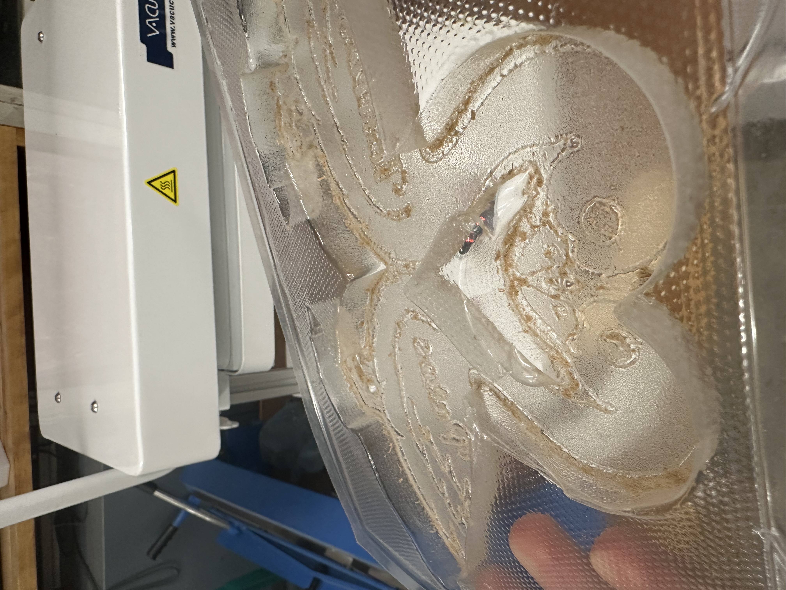</p>
<p>I redid the vacuum-forming, and got less of a hole, but there was still some MDF residue. I used compressed air to try and blow it out, as well as a quick rinse, but could not remove all of it. At this point, it was 5pm on Thursday, and my girlfriend was arriving into town at 7pm. I proceeded with the plaster.</p>
<p>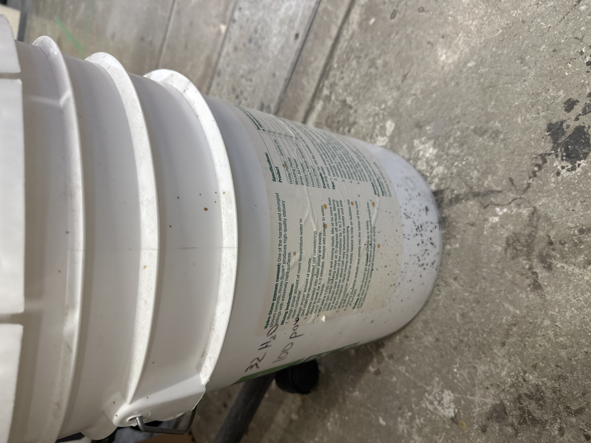</p>
<p>I mixed the recommended 32 parts water to 100 parts powder drawn on the canister. Her favorite color is pink, so I added a little bit of red acrylic paint to make the plaster pink. When I poured her mold it was still, a bit watery.</p>
<p>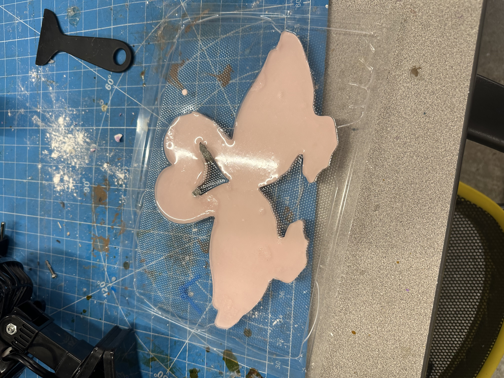</p>
<p>Because I had the original vacuum form, I decided to make one for myself and using molding clay and Gorilla Glue to seal the holes. For mine, I added purple acrylic paint to the mix and poured.</p>
<p>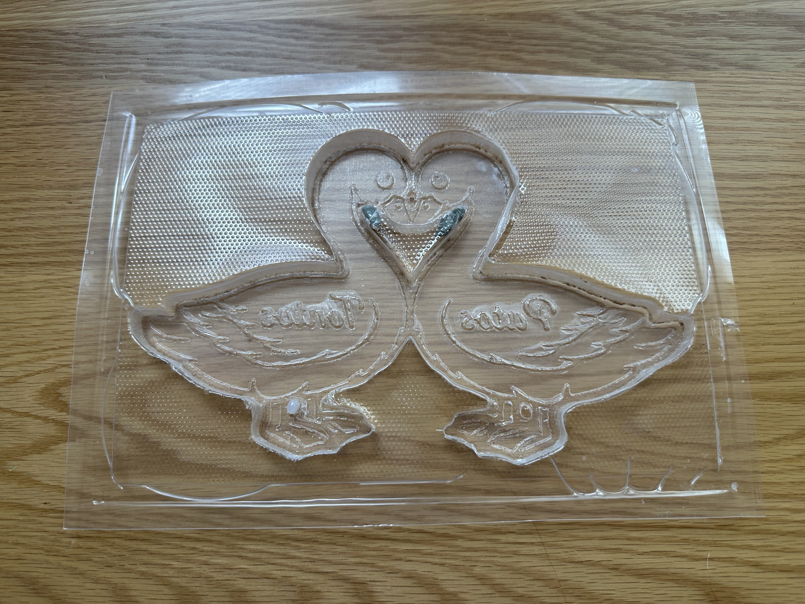</p>
<p>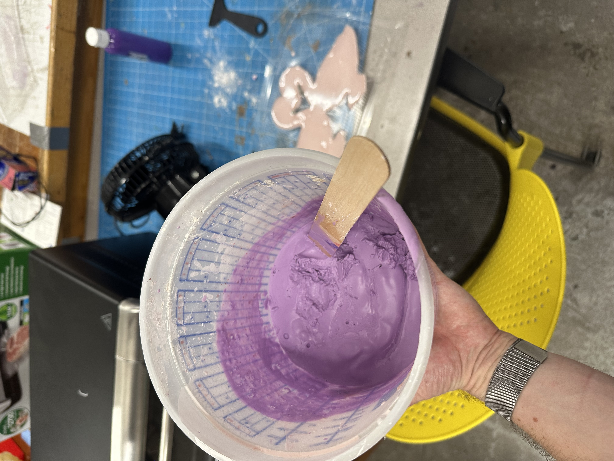</p>
<p>At 6:30, the molds had a slight watery layer, so I poured this layer off so that I could wrap the molds in paper towels to bring to my dorm to finish casting, hidden under some other things in my room. Finally a couple of hours later, I took them out of the vacuum forms.</p>
<p>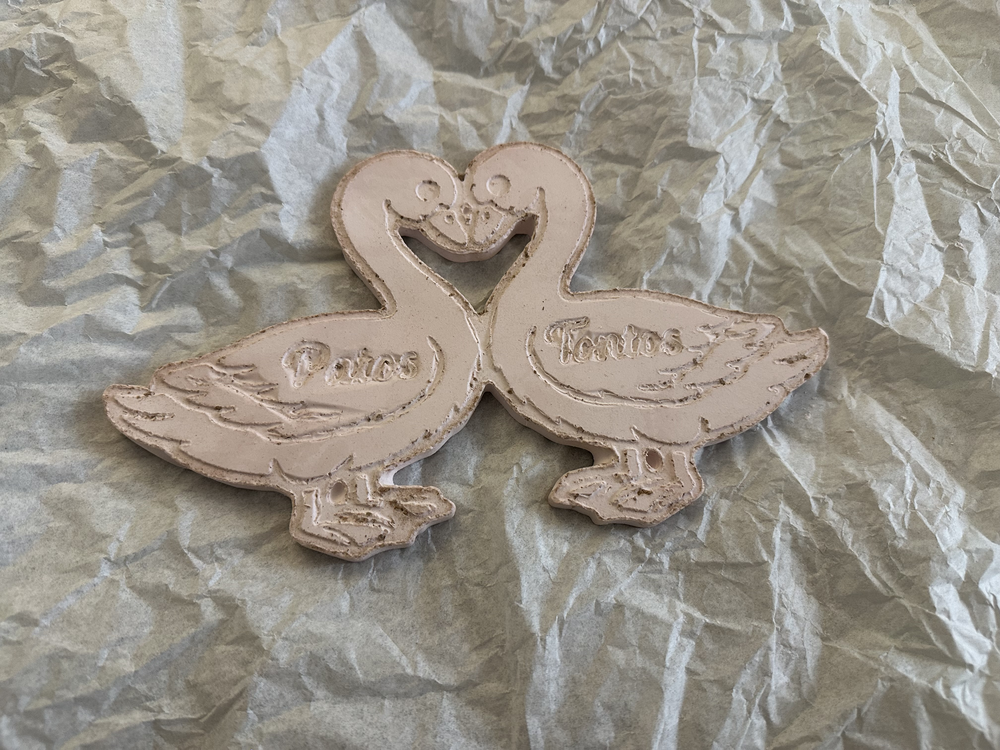</p>
<p>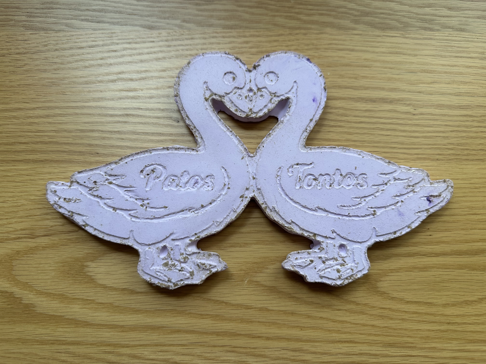</p>
<p>While both still had tiny pieces of MDF and the backs were slightly chalky, overall they were both structurally sound and hers (on the wrapping paper) came out pretty well. Imperfections and all, she loved it, and it ended up being a nice addition to our celebration!</p>
<p class="margin"> </p>
</div>